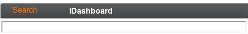
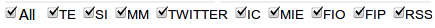
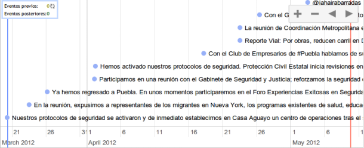
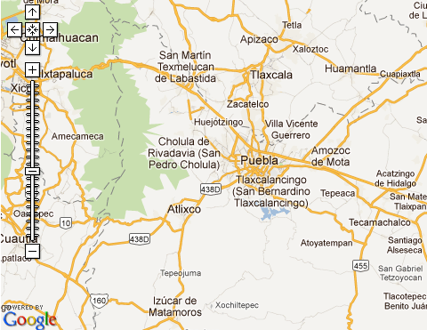
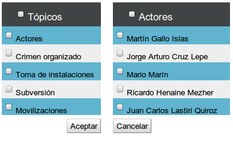

iNtelinet
User’s Guide
Welcome to Intelinet
Intelinet is a search engine that allows you to define search criteria, information sources and views. Intelinet presents relevant information within the last 24 hours in the iDashboard, helping you to take better and faster decisions.
This chapter describes the web-based interface provided by iNtelinet for queries
What you need to get started with iNtelinet
-
Active User and password.
-
Browser Internet Explorer 6.0 or further.
-
Network access where iNtelinet is installed.
Logging in to iNtelinet
Account created by an administrator and subsequent activation.
On the log-in page, enter the following:
|
Field
|
Do
|
|
Username
|
Enter your active user name.
|
|
Password
|
Use password sent to your email or the updated one in the iConsole.
|
Intelinet search
A search begins capturing a keyword and selecting sources to feed it. Results appear on the right side of your workspace, these can be ordered by date and relevance.
Search box

-
Capture keywords in the search box.
-
Click <<Search>>
Keywords will remain in the search box after you clicked <<Search>>.
Without keywords clicking <<Search>> will not display results or message.
Information sources

Checked sources will feed your intelisearch.
Unchecked sources can be enabled in any moment, but it’s necessary to reload your search after this update.
Filters
Intelinet offers different filters, located on the right side of your working space. There you may find subtopics of each filter, next to each one a number represents how many documents are available for certain subtopics.
Clicking on subtopics will refine search, results will be updated with the new parameters. These parameters appear under the search box for you to keep track.
Widgets
Intelinet offers different views, click the buttons to pop them up by double clicking on the buttons.
It is possible to visualize one or more widgets at the same time, clicking them one by one pops up a new window for each.
Timeline

Timeline is a view that indicates Year/Month/Day/Hour in which the document was uploaded. Using zoom buttons
or third mouse button scale can be modified.
On the upper right corner you can verify the count of results that appear on the timeline (blue points on workspace) and results out of it.
Map

Map widget pops up a google map with flags, each flag represents location where the document was uploaded. Cursor over flag brings out details of that document and double clicking it leads you to that result.
Cluster
Clicking a node remarks lines, documents that match this parameter.On the left side details such as Connections and Results may be visualized.
Grid
-
After double clicking <<Reticular>> filter parameters are requested, subtopics list appear and may be checked if you want to include them in view.

-
Once paremeters are selected new window pops up, a graph appears on the right side. Graphs are composed by two elements: nodes and lines.
-
Node: For each subtopic checked a node is drawn.
-
Line: Symbolize documents that match both parameters, nodes.
iDashboard
All widgets in one. Viewing last 24 hours relevant information from your allowed sources keeps you updated.